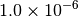
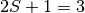
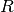

A Psi4 Tutorial¶
Note
Some Psi4 functions and keywords have aliases. For example,
frequency(), frequencies(), and freq() all work to
obtain vibrational frequencies.
Basic Input File Structure¶
Psi4 reads input from a text file, which can be prepared in any standard
text editor. The default input file name is input.dat and the
default output file name is output.dat. So that you can give your
files meaningful names, these defaults can be changed by specifying
the input file name and output file name on the the command line.
The syntax is:
>>> psi4 input-name output-name
If you give an input name but no output name, then the output name will be the same as the input name (subtracting any ”.in” or ”.dat” suffix), plus a ”.out” suffix.
Sample Input Files¶
Below, we will provide a few simple input files as examples. A large number of sample input files, covering everything from single-point energies using density-functional theory to response properties from coupled-cluster theory, can be found in the psi4/samples directory.
Running a Basic Hartree–Fock Calculation¶
In our first example, we will consider a Hartree–Fock SCF computation for the water molecule using a cc-pVDZ basis set. We will specify the geometry of our water molecule using a standard Z-matrix.
# Any line starting with the # character is a comment line
#! Sample HF/cc-pVDZ H2O computation
memory 250 mb
molecule h2o {
O
H 1 0.96
H 1 0.96 2 104.5
}
set basis cc-pVDZ
energy('scf')
Note
The memory and basis set specifications are placed before the energy function is called. Any user options need to be set before the procedure they are meant to affect.
For your convenience, the above example can be found in tu1-h2o-energy. You can run it if you wish. Once Psi4 is in your path (see the User Configuration section of the installation instructions), you can run this computation by typing
>>> psi4 input.dat output.dat
If everything goes well, the computation should complete and should report a final restricted Hartree–Fock energy in a section like this:
Energy converged.
@RHF Final Energy: -76.02663273410671
By default, the energy should be converged to about , so agreement is only expected for about the first 6 digits after the decimal. If the computation does not complete, there is probably a problem with the compilation or installation of the program (see the installation instructions in Sec. Compiling and Installing from Source).
This very simple input is sufficient to run the requested information. Notice that we didn’t tell the program some otherwise useful information like the charge on the molecule (0, it’s neutral), the spin multiplicity (1 for a closed-shell molecule with all electrons paired), or the reference wavefunction to use (restricted Hartree–Fock, or RHF, is usually appropriate for a closed-shell molecule). The program correctly guessed all of these options for us. We can change the default behavior through additional keywords.
Let’s consider what we would do for an open-shell molecule, where
not all electrons are paired. For example, let’s run a computation
on methylene (CH2), whose ground electronic state has two unpaired
electrons (triplet electronic state, or a spin multiplicity ).
In this case, the default spin multiplicity (1) is not correct, so we
need to tell the program the true value (3). Like many programs, Psi4
can get the charge and multiplicity as the first two integers in the
Z-matrix. Note the line with 0 3 at the beginning of the molecule
specification below. In this example we will also specify the bond length
and bond angle as variables ( and  ), whose values are given
at the end of the Z-matrix specification.
), whose values are given
at the end of the Z-matrix specification.
#! Sample UHF/6-31G** CH2 computation
memory 250 mb
molecule ch2 {
0 3
C
H 1 R
H 1 R 2 A
R = 1.075
A = 133.93
}
set basis 6-31G**
set reference uhf
energy ('scf')
This sample input can be found in
tu2-ch2-energy and as
before it can be run through the command psi4 input.dat output.dat
(actually, because psi4 by default looks for an input file named
input.dat and writes by default to a file called output.dat, in this
case one could also just type psi4). If it works, it should print
the final energy as
@UHF Final Energy: -38.92533462456894
Notice we added a new keyword, set reference uhf, to the input. For
open-shell molecules, we have a choice of unrestricted orbitals
(unrestricted Hartree–Fock, or UHF), or restricted orbitals (restricted
open-shell Hartree–Fock, or ROHF). Usually, UHF is a little easier to
converge (although it may be more susceptible to spin contamination than
ROHF).
Geometry Optimization and Vibrational Frequency Analysis¶
The above examples were simple single-point energy computations
(as specified by the energy() function). Of course there are other
kinds of computations to perform, such as geometry optimizations and
vibrational frequency computations. These can be specified by replacing
energy() with optimize() or frequency(), respectively.
Here’s an example of optimizing the H2O molecule using Hartree–Fock with a cc-pVDZ basis set (located in tu3-h2o-opt).
#! Optimize H2O HF/cc-pVDZ
memory 250 mb
molecule h2o {
O
H 1 0.96
H 1 0.96 2 104.5
}
set basis cc-pVDZ
optimize('scf')
This should perform a series of gradient computations. The gradient points
which way is downhill in energy, and the optimizer then modifies the
geometry to follow the gradient. After a few cycles, the geometry should
converge with a message like Optimization is complete!. As indicated
in the following table (printed by the optimizer at the end of the
computation and grep-able with ~), the energy decreases with each step,
and the maximum force on each atom also decreases with each step (in
principle these numbers could increase in some iterations, but here they do
not).
--------------------------------------------------------------------------------------------------------------- ~
Step Total Energy Delta E MAX Force RMS Force MAX Disp RMS Disp ~
--------------------------------------------------------------------------------------------------------------- ~
1 -76.026632734857 -76.026632734857 0.01523505 0.01245744 0.02742199 0.02277500 ~
2 -76.027022668419 -0.000389933562 0.00178749 0.00142923 0.01007985 0.00594840 ~
3 -76.027032729361 -0.000010060942 0.00014016 0.00008485 0.00077279 0.00044621 ~
--------------------------------------------------------------------------------------------------------------- ~
To get harmonic vibrational frequencies, it’s important to keep in mind that the values of the vibrational frequencies are a function of the molecular geometry. Therefore, it’s important to obtain the vibrational frequencies at the OPTIMIZED GEOMETRY. We could set up a second input file to perform the vibrational frequency analysis, being very careful to copy over the optimized geometry from the bottom of the output file for the geometry optimization. This geometry could be specified in either z-matrix or Cartesian formats. However, there’s a much easier way to do this. If we specify a vibrational frequency analysis in the same input file as the optimization, after the optimization function has been called, then the optimized geometry will automatically be carried over.
So, it’s easiset to do the optimization and vibrational frequency analysis together. This can be specified as follows (see test case tu4-h2o-freq):
#! Optimization followed by frequencies H2O HF/cc-pVDZ
memory 250 mb
molecule h2o {
O
H 1 0.96
H 1 0.96 2 104.5
}
set basis cc-pVDZ
optimize('scf')
scf_e, scf_wfn = frequencies('scf', return_wfn=True)
The program will do the same optimization as in our previous example, but then it will follow it with some computations to obtain the Hessian (second derivative matrix) of the electronic energy with respect to nuclear displacements. From this, it can obtain the harmonic vibrational frequencies, given below (roundoff errors of around 0.1 cm-1 may exist):
Irrep Harmonic Frequency
(cm-1)
-----------------------------------------------
A1 1775.6480
A1 4113.3794
B2 4212.1826
-----------------------------------------------
Notice that the symmetry type of the normal modes is specified (A1, A1, B2). The program also prints out the normal modes in terms of Cartesian coordinates of each atom. For example, the normal mode at 1776 cm-1 is:
Frequency: 1775.65
Force constant: 0.1193
X Y Z mass
O 0.000 0.000 -0.270 15.994915
H 0.000 0.417 0.538 1.007825
H 0.000 -0.417 0.538 1.007825
where the table shows the displacements in the X, Y, and Z dimensions for each atom along the normal mode coordinate. (This information could be used to animate the vibrational frequency using visualization software.)
Because the vibrational frequencies are available, a thermodynamics analysis is automatically performed at the end of the computation. You can see this in the next section of the output file. The vibrational frequencies are sufficient to obtain vibrational contributions to enthalpy (H), entropy (S), and Gibbs free energy (G). Similarly, the molecular geometry is used to obtain rotational constants, which are then used to obtain rotational contributions to H, S, and G.
Analysis of Intermolecular Interactions¶
Now let’s consider something a little more interesting. Psi4 contains code to analyze the nature of intermolecular interactions between two molecules, via symmetry-adapted perturbation theory (SAPT) [Jeziorski:1994:1887]. This kind of analysis gives a lot of insight into the nature of intermolecular interactions, and Psi4 makes these computations easier than ever.
For a SAPT computation, the input needs to provide information on two distinct molecules. This is very easy, we just give a Z-matrix or set of Cartesian coordinates for each molecule, and separate the two with two dashes, like this:
# Example SAPT computation for ethene*ethine (i.e., ethylene*acetylene),
# test case 16 from the S22 database
molecule dimer {
0 1
C 0.000000 -0.667578 -2.124659
C 0.000000 0.667578 -2.124659
H 0.923621 -1.232253 -2.126185
H -0.923621 -1.232253 -2.126185
H -0.923621 1.232253 -2.126185
H 0.923621 1.232253 -2.126185
--
0 1
C 0.000000 0.000000 2.900503
C 0.000000 0.000000 1.693240
H 0.000000 0.000000 0.627352
H 0.000000 0.000000 3.963929
units angstrom
}
Here’s the second half of the input, where we specify the computation options:
set {
basis jun-cc-pVDZ
scf_type DF
freeze_core True
}
energy('sapt0')
Before, we have been setting keywords individually with commands like
set basis cc-pVDZ. Because we have a few more options now, it’s
convenient to place them together into the set
block, bounded by {...}. This
will set all of these options as “global” options (meaning that they are
visible to all parts of the program). Most common Psi4 options can be
set in a globals section like this. If an option needs to be visible
only to one part of the program (e.g., we only want to increase the
energy convergence in the SCF code, but not the rest of the
code), it can be placed in a section of input visible to that part of the
program (e.g., set scf e_convergence 1.0E-8).
Back to our SAPT example, we have found that for basic-level SAPT
computations (i.e., SAPT0), a good error cancellation is found
[Hohenstein:2012:WIREs] with the jun-cc-pVDZ basis (this is the
usual aug-cc-pVDZ basis, but without diffuse functions on hydrogen and
without diffuse  functions on heavy atoms) [Papajak:2011:10]. So,
we’ll use that as our standard basis set. The SAPT code is designed to
use density fitting techniques, because they introduce minimal errors
while providing much faster computations [Hohenstein:2010:184111]
[Hohenstein:2010:014101]. Since we’re using density fitting for the SAPT,
we might as well also use it for the Hartree–Fock computations that are
performed as part of the SAPT. We can specify that with
functions on heavy atoms) [Papajak:2011:10]. So,
we’ll use that as our standard basis set. The SAPT code is designed to
use density fitting techniques, because they introduce minimal errors
while providing much faster computations [Hohenstein:2010:184111]
[Hohenstein:2010:014101]. Since we’re using density fitting for the SAPT,
we might as well also use it for the Hartree–Fock computations that are
performed as part of the SAPT. We can specify that with
scf_type DF.
Density fitting procedures require the use of auxiliary basis sets that pair with the primary basis set. Fortunately, Psi4 is usually smart enough to figure out what auxiliary basis sets are needed for a given computation. In this case, jun-cc-pVDZ is a standard enough basis set (just a simple truncation of the very popular aug-cc-pVDZ basis set) that Psi4 correctly guesses that we want the jun-cc-pVDZ-JKFIT auxiliary basis for the Hartree–Fock, and the jun-cc-pVDZ-RI basis set for the SAPT procedure.
To speed up the computation a little, we also tell the SAPT procedure to
freeze the core electrons with freeze_core True. The SAPT
procedure is invoked with the simple call, energy('sapt0'). This
call knows to automatically run two monomer computations and a dimer
computation and then use these results to perform the SAPT analysis. The
various energy components are printed at the end of the output, in addition
to the total SAPT0 interaction energy. An explanation of the various
energy components can be found in the review by Jeziorski, Moszynski, and
Szalewicz [Jeziorski:1994:1887], and this is discussed in more detail
in the SAPT section later in this manual. For now, we’ll note that most of
the SAPT energy components are negative; this means those are attractive
contributions (the zero of energy in a SAPT computation is defined as
non-interacting monomers). The exchange contributions are positive
(repulsive). In this example, the most attractive contribution between
ethylene and acetylene is an electrostatic term of -2.12 kcal mol-1
(Elst10,r where the 1 indicates the first-order
perturbation theory result with respect to the intermolecular interaction,
and the 0 indicates zeroth-order with respect to intramolecular electron
correlation). The next most attractive contribution is the Disp20
term (2nd order intermolecular dispersion, which looks like an MP2 in which
one excitation is placed on each monomer), contributing an attraction of
-1.21 kcal mol-1. It is not surprising that the electrostatic
contribution is dominant, because the geometry chosen for this example has the
acetylene perpendicular to the ethylene, with the acetylene hydrogen
pointing directly at the double bond in ethylene; this will be attractive
because the H atoms in acetylene bear a partial positive charge, while the
electron-rich double bond in ethylene bears a partial negative charge. At
the same time, the dispersion interaction should be smaller because the
perpendicular geometry does not allow much overlap between the monomers.
Hence, the SAPT analysis helps clarify (and quantify) our physical
understanding about the interaction between the two monomers.
Potential Surface Scans and Counterpoise Correction Made Easy with Psithon¶
Finally, let’s consider an example that shows how the Python driver in Psi4 simplifies some routine tasks. Psi4 can interpret valid Python code in addition to the computational chemistry directives we’ve seen in the previous examples; we call this mixture Psithon. The Python computer language is very easy to pick up, and even users previously unfamiliar with Python can use it to simplify tasks by modifying some of the example input files supplied with Psi4 in the psi4/samples directory.
Suppose you want to do a limited potential energy surface scan, such as
computing the interaction energy between two neon atoms at various
interatomic distances. One simple but unappealing way to do this is to
create separate input files for each distance to be studied. Most of
these input files are identical, except that the interatomic distance is
different. Psithon lets you specify all this in a single input file,
looping over the different distances with an array like this:
Rvals=[2.5, 3.0, 4.0].
Let’s also suppose you want to do counterpoise (CP) corrected energies.
Counterpoise correction involves computing the dimer energy and then
subtracting out the energies of the two monomers, each evaluated in the
dimer basis. Again, each of these computations could be run in a separate
input file, but because counterpoise correction is a fairly standard
procedure for intermolecular interactions, Psi4 knows about it and has
a built-in routine to perform counterpoise correction. It only needs to
know what method you want to do the counterpoise correction on (here, let’s
consider CCSD(T)), and it needs to know what’s monomer A and what’s monomer
B. This last issue of specifying the monomers separately was already dealt
with in the previous SAPT example, where we saw that two dashes in the
molecule block can be used to separate monomers.
So, we’re going to do counterpoise-corrected CCSD(T) energies for Ne2 at a series of different interatomic distances. And let’s print out a table of the interatomic distances we’ve considered, and the CP-corrected CCSD(T) interaction energies (in kcal mol-1) at each geometry. Doing all this in a single input is surprisingly easy in Psi4. Here’s the input (available as tu6-cp-ne2).
#! Example potential energy surface scan and CP-correction for Ne2
memory 250 mb
molecule dimer {
Ne
--
Ne 1 R
}
Rvals=[2.5, 3.0, 4.0]
set basis aug-cc-pVDZ
set freeze_core True
# Initialize a blank dictionary of counterpoise corrected energies
# (Need this for the syntax below to work)
ecp = {}
for R in Rvals:
dimer.R = R
ecp[R] = energy('ccsd(t)', bsse_type = 'cp')
psi4.print_out("\n")
psi4.print_out("CP-corrected CCSD(T)/aug-cc-pVDZ interaction energies\n\n")
psi4.print_out(" R [Ang] E_int [kcal/mol] \n")
psi4.print_out("-----------------------------------------------------\n")
for R in Rvals:
e = ecp[R] * psi_hartree2kcalmol
psi4.print_out(" %3.1f %10.6f\n" % (R, e))
First, you can see the molecule block has a couple dashes to
separate the monomers from each other. Also note we’ve used a Z-matrix to
specify the geometry, and we’ve used a variable (R) as the
interatomic distance. We have not specified the value of R in
the molecule block like we normally would. That’s because we’re
going to vary it during the scan across the potential energy surface.
Below the molecule block, you can see the Rvals array
specified. This is a Python array holding the interatomic distances we
want to consider. In Python, arrays are surrounded by square brackets, and
elements are separated by commas.
The next lines, set basis aug-cc-pVDZ and set freeze_core True,
are familiar from previous test cases. Next comes a slightly
unusual-looking line, ecp = {}. This is Python’s way of initializing
a “dictionary”. We’re going to use this dictionary to store the
counterpoise-corrected energies as they become available. A dictionary is
like an array, but we can index it using strings or floating-point numbers
instead of integers if we want. Here, we will index it using
floating-point numbers, namely, the R values. This winds up being
slightly more elegant than a regular array in later parts of the input
file.
The next section, beginning with for R in Rvals:, loops over the
interatomic distances, R, in our array Rvals. In Python,
loops need to be indented, and each line in the loop has to be indented
by the same amount. The first line in the loop, dimer.R = R,
sets the Z-matrix variable R of the molecule called dimer
to the R value extracted from the Rvals array. The next line,
ecp[R] = energy('ccsd(t)', bsse_type='cp'), computes the counterpoise-corrected
CCSD(T) energy and places it in the ecp dictionary with R as
the index. Note we didn’t need to specify ghost atoms, and we didn’t need
to call the monomer and dimer computations separately. The built-in
Psithon function _nbody_gufunc() does it all for us, automatically.
Near the very end of the output file, the counterpoise correction Python function will print a nice summary of the results of the counterpoise computation (the energies of the dimer, of monomer 1 with the ghost functions of monomer 2, of monomer 2 with the ghost functions of monomer 1, and the overall counterpoise-corrected interaction energy):
//>>>>>>>>>>>>>>>>>>>>>>>>>>>>>>>>>>>//
// CP Computation: Results. //
//<<<<<<<<<<<<<<<<<<<<<<<<<<<<<<<<<<<//
============= Hartree =============
System: Energy (full):
Complex -257.4186740329
Monomer 1 -128.7093240575
Monomer 2 -128.7093240575
Interaction -0.0000259178
=========== kcal*mol^-1 ===========
System: Energy (full):
Complex -161532.6634330375
Monomer 1 -80766.3235846726
Monomer 2 -80766.3235846725
Interaction -0.0162636924
And that’s it! The only remaining part of the example input is a little table
of the different R values and the CP-corrected CCSD(T) energies, converted from
atomic units (hartree) to kcal mol-1 by multiplying by the
automatically-defined conversion factor psi_hartree2kcalmol. Psi4
provides several built-in physical constants and conversion factors, as
described in section Physical Constants.
Notice the loop over to create
the table looks just like the loop over R to run the different
computations, and the CP-corrected energies ecp[R] are accessed the same
way they were stored. The print line at the end just specifies some
formatting for the printed table (first element is a floating point number 3
spaces wide with one digit after the decimal, and the second element is a
floating point number 10 spaces wide with 6 digits after the decimal); the
format strings are the same as in the C programming language. For tables more
complicated than the simple one used here, Psithon has built-in support for
tables (see the next section).
Our table is printed at the very end of the output file, and looks like this
CP-corrected CCSD(T)/aug-cc-pVDZ interaction energies
R (Ang) E_int (kcal/mol)
-----------------------------------------------------
2.5 0.757718
3.0 0.015687
4.0 -0.016264
The following section goes over Psithon in much more detail, but hopefully this example already makes it clear that many complex tasks can be done very easily in Psi4.